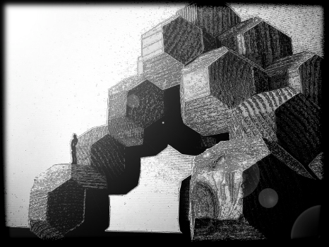

Het is mogelijk om met veel blokjes de drie-dimensionale ruimte naadloos te vullen. Verbazend genoeg kunnen ook andere lichamen de ruimte zonder gaten vullen met verschuivingen van telkens hetzelfde object. Men noemt deze lichamen ook wel ruimtevullende polyhedra. Met deze applet kun je dit uitproberen voor vijf belangrijke voorbeelden van deze polyhedra. Immers, buiten hun zuiver wiskundige betekenis, vormen ze ook de basis voor de ruimtelijke schikking van atomen in kristalstructuren.
|
 |
Futuristisch architecturaal ontwerp met ruimtevullende structuren